Principle Investigator
Guo-Jun Qi, Ph.D.
School of Engineering
Machine Perception and Learning (MAPLE)
Qi Guojun, a native of Hefei, Anhui Province, is a Fellow of the International Institute of Electrical and Electronics Engineers (EEE), a Fellow of the International Association of Pattern Recognition (IAPR), a Distinguished Scientist of the ACM, and a winner of the Guo Moruo Award of the University of Science and Technology of China. He received his B.S. and Ph.D. degrees in engineering from the Department of Automation, University of Science and Technology of China in 2005 and 2009, and his Ph.D. degree in Electrical and Computer Engineering from the University of Illinois at Urbana-Champaign in 2013. In 2014, he became a research fellow at the IBM T.J.Watson Research Center and began teaching in the Computer Science Department at the University of Central Florida.
Email: qiguojun@westlake.edu.cn
Research Assistant Professor
Liyuan Ma
2023-present Research Assistant Westlake University
2018-2023, Ph.D, College of Information Science&&Electronic Engineering, Zhejiang University
My research is dedicated to constructing world models that emulate real-world phenomena, enabling the creation, control, and editing of rich visual content. My primary focus is on diffusion model and multimodal content generation applications, with an emphasis on controllable generation and editing of images and videos.
Email: maliyuan@westlake.edu.cn
Postdoctoral Fellows
Zhiyang Chen
2024-Present, PostDoc, Westlake University
2019-2024, Ph.D, Institute of Automation, Chinese Academy of Sciences
My research focuses on improving the quality and effectiveness of human instruction-following in multi-modal generation, with the aim of advancing Artificial General Intelligence (AGI). I explore key areas such as large-scale multi-modal models, diffusion models, and reinforcement learning to develop more robust and adaptive systems capable of understanding and responding to complex human directives across diverse modalities.
Email: chenzhiyang@westlake.edu.cn
Co-adviser
-
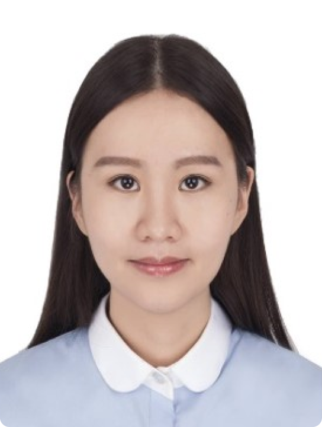
Mengmeng Wang
wangmengmeng@westlake.edu.cn
-
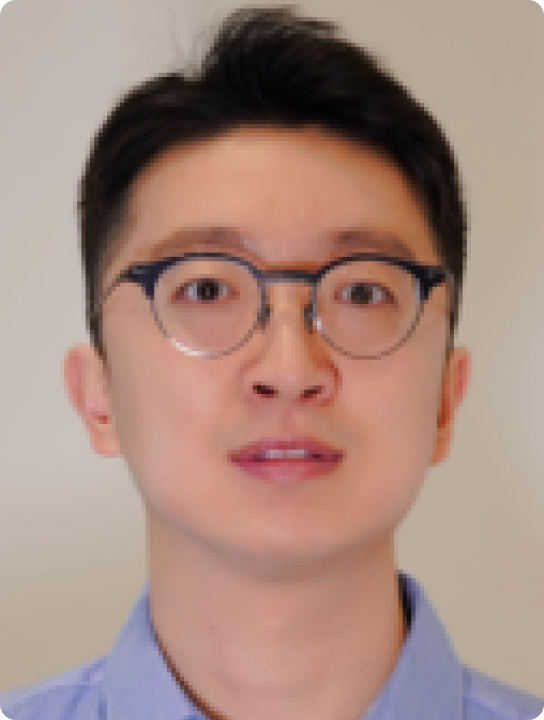
Mingyuan Zhou
zhoumingyuan@westlake.edu.cn
-
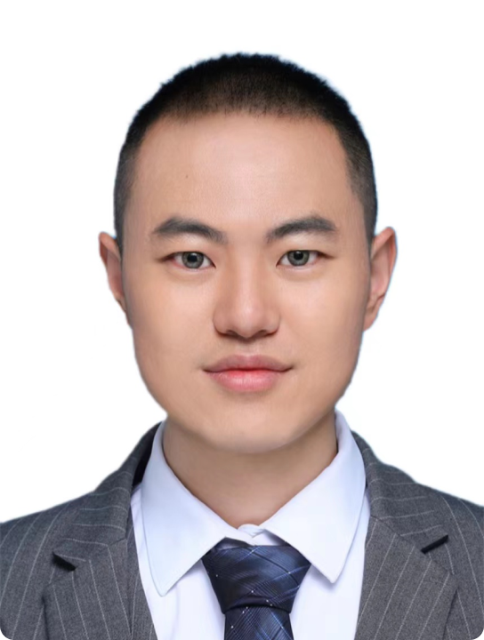
Weijian Luo
luoweijian@westlake.edu.cn
Assistants
-
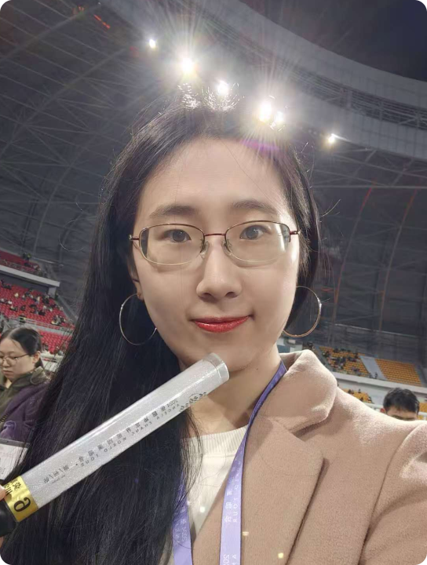
Tianxin Jiang
Administrative Assistant
jiangtianxin@westlake.edu.cn
-
Jianhao Zeng
Research Assistant
zengjianhao@westlake.edu.cn
Ph.D Students
-
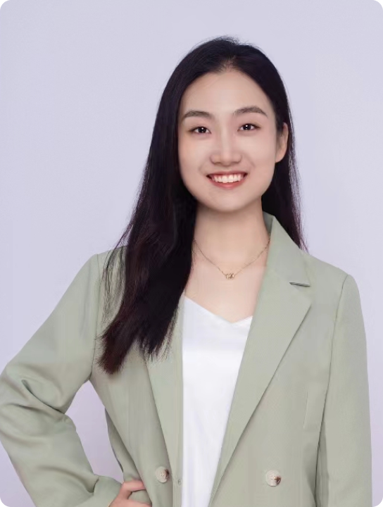
Jinjin Cao
caojinjin@westlake.edu.cn
-
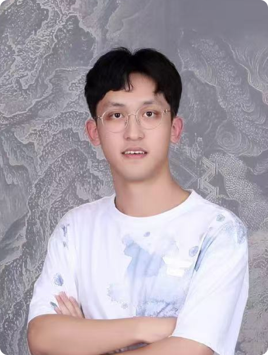
Tiancheng Li
litiancheng@westlake.edu.cn
-
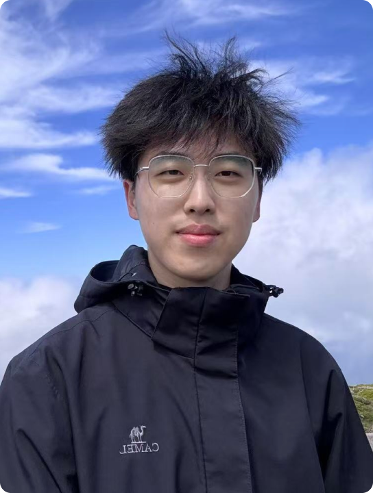
Xueji Fang
fangxueji@westlake.edu.cn
-
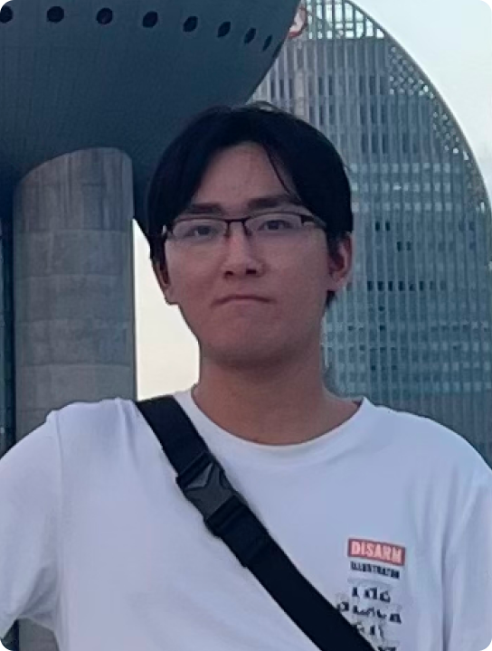
Zemin Huang
huangzemin@westlake.edu.cn
-
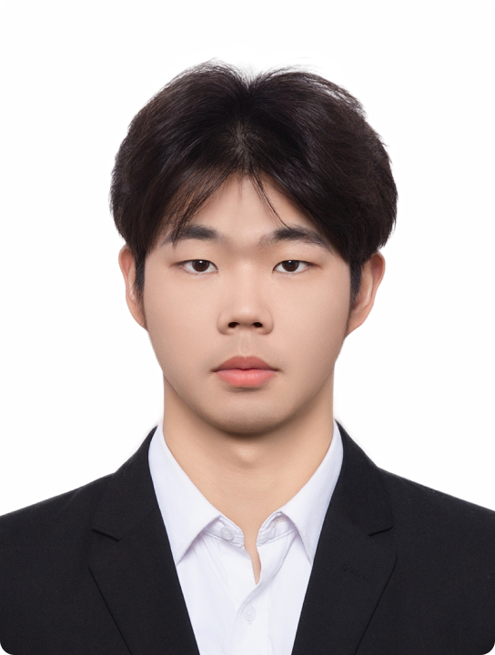
Zijun Wang
wangzijun63@westlake.edu.cn
Visiting Students
-
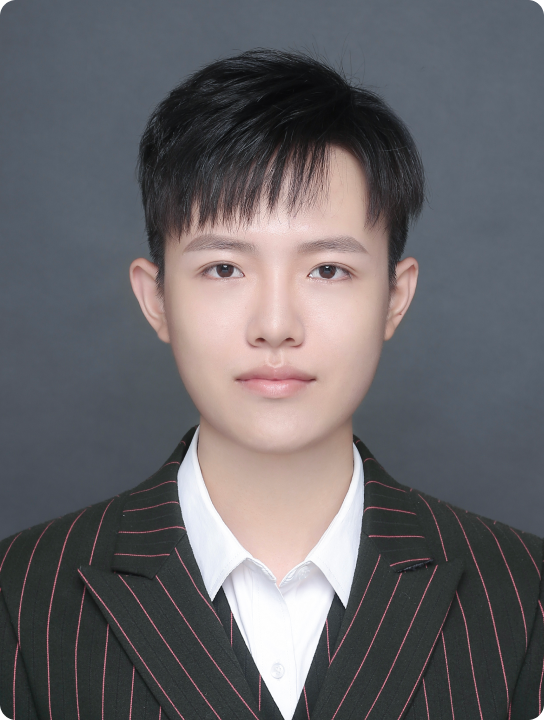
Jie Wang
wangjie@westlake.edu.cn
-
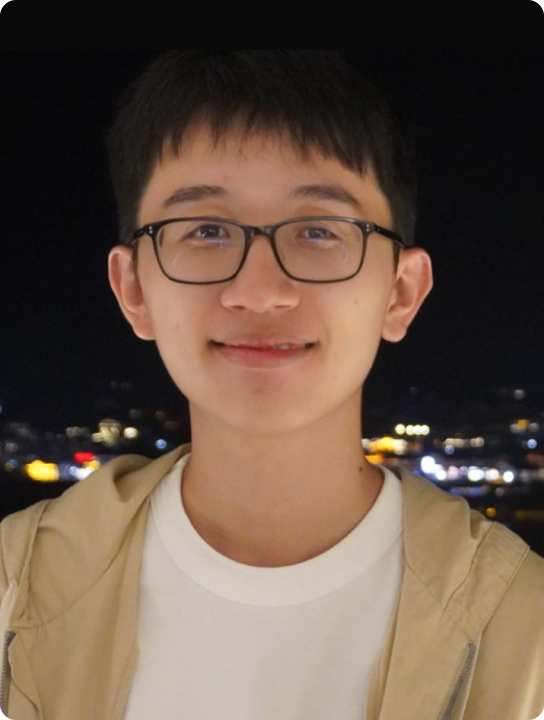
Zilv Ye
yezilv@westlake.edu.cn
-
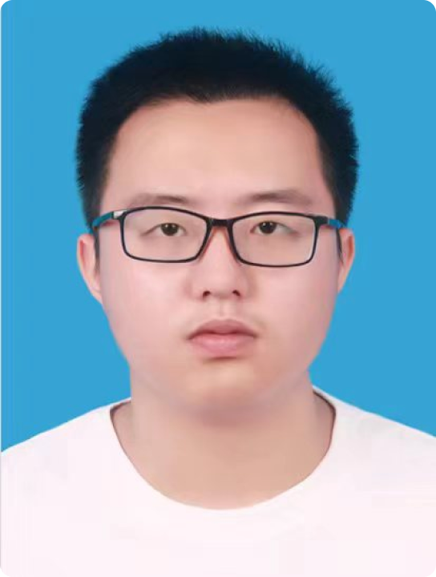
Zirui Cheng
chengzirui@westlake.edu.cn
Alumni
Students:
-
Guancheng Zhou
Xi'an Jiaotong University
-
Wenyue Chen
Dalian University of Technology
-
Jing Xu
Nanjing University of Aeronautics and Astronautics
-
Yuelin Li
Beijing University of Posts and Telecommunications
-
Jinxiu Liu
South China University of Technology
-
Zixuan Chen
South China University of Technology
-
Ruotian Peng
South China University of Technology
-
Chaowei Liu
National University of Singapore
-
Zeyu Wu
University of Science and Technology of China
-
Zihao Pan
Sun Yat-sen University